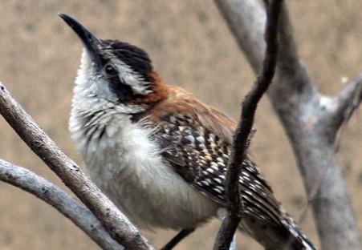

Aves de Estación Guacalchilla.

El Torogoz
Eumomota Superciliosa (guardabarranco, torogoz) Es una especie de ave coraciforme de la familia Momotidae. Habita en Centroamérica desde la península de Yucatán hasta Costa Rica
Leer másZanate o Clarinero
El zanate mexicano (también, chanate o clarinero) (Quiscalus mexicanus) es una especie de ave paseriforme de la familia Icteridae que vive en América. Es la más grande de los zanates
Leer más

La Guacalchía
El cucarachero dorsirrufo (Campylorhynchus capistratus), también denominado guacalchía guacalchilla, huacalchía, huacalchilla, chocholpía, arrocero y matraca de espalda rufa
Leer más
El Talapo
El momoto amazónico o momoto común (Momotus momota), también denominado pájaro león (en Venezuela), barranquero o barranquillo coronado (en Colombia), relojero amazónico (en Perú)
Leer más